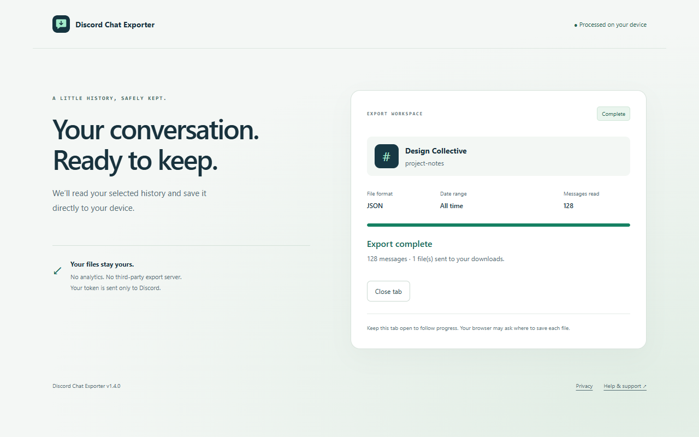

Keep the details
Structured message data with original text, authors, timestamps, attachment links, reactions, and reply references. Ready for your own tools.
GOOD CONVERSATIONS DESERVE A COPY.
Your project notes. Your community’s history. The messages you want to come back to. Save them from Discord in a format that works for you.
Get it on the Chrome Web StoreProcessed on your device · JSON, CSV & TXT

Actual application · illustrative conversation data
ONE HISTORY. THREE POSSIBILITIES.
No conversion service in the middle. Choose your file and save it straight from your browser.
Structured message data with original text, authors, timestamps, attachment links, reactions, and reply references. Ready for your own tools.
Open your history in a spreadsheet. Review messages by author or date, with attachment URLs and reaction counts alongside them.
A straightforward transcript with author names, times, and readable text. Keep it in your notes or open it in a text editor.
FROM CHANNEL TO COPY
Visit a server channel or direct message at discord.com, then open the extension.
Enter your API token. Choose a conversation, your file format, and a date range in UTC—or all time.
Follow progress in the export tab. Export one conversation or every text channel in the selected source.
A SMALLER DATA FOOTPRINT
The extension connects directly to Discord using the token you enter. Formatting happens in your browser. There is no developer-operated export server, analytics, or advertising.
Your token stays in session storage when supported, with a local-storage fallback you can clear. Downloads stay wherever you save them.
Read the full privacy policy ↗BEFORE YOU EXPORT
Yes. Choose Direct messages in the popup to select an individual or group conversation available to your account. A token with access to the selected conversation is required.
Exports include attachment URLs. The extension does not download attachment files, and those URLs may expire. Save important attachments separately.
Every channel exports the server’s text and announcement channels returned by the API, with one file per channel. Voice channels, forum posts, and threads are not included. A permission error stops the batch; files already saved are kept.
No. This is an independent project and is not affiliated with or endorsed by Discord. Only export conversations you are authorized to access, and follow Discord’s terms and your community’s rules.